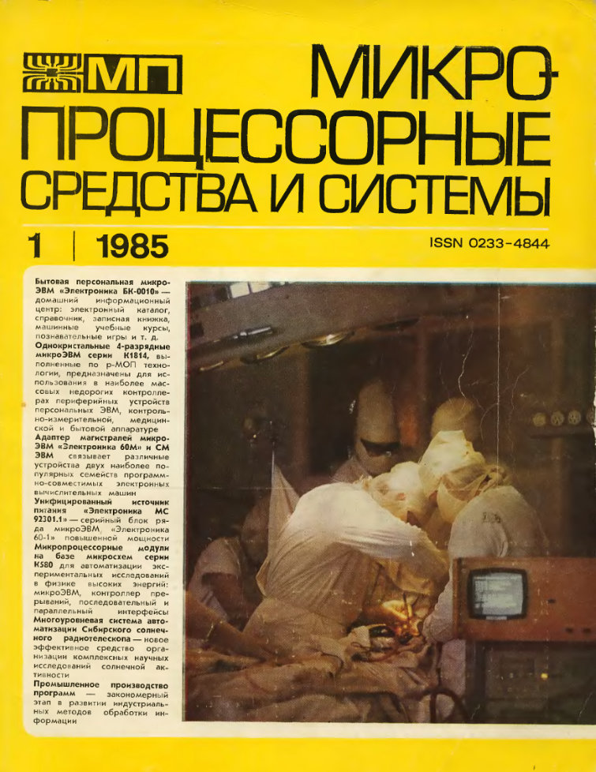
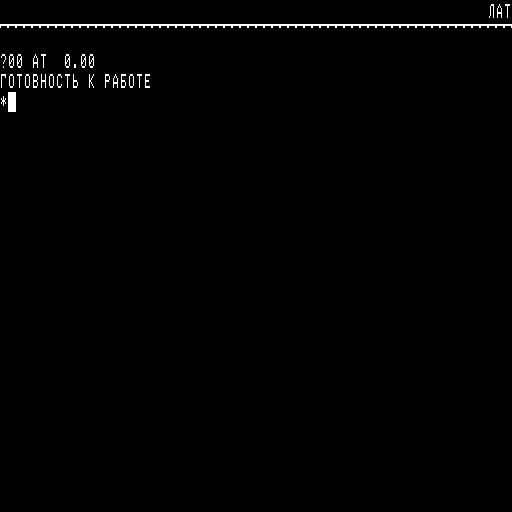
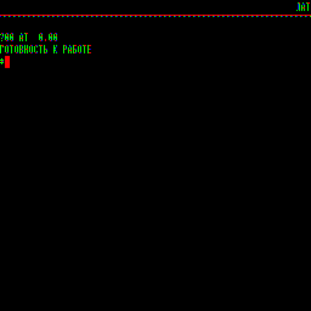
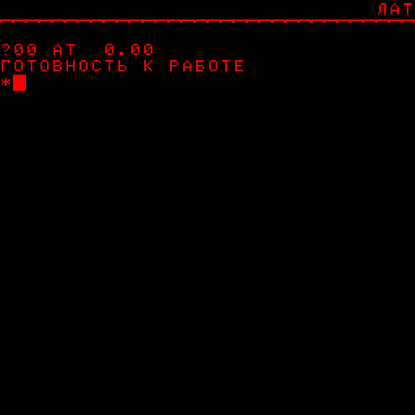

БК (семейство компьютеров)
Семейство компьютеров БК-0010 было разработано в НИИ точной технологии НПО «Научный центр», г. Зеленоград. Главный конструктор от НИИТТ — Александр Н. Полосин, главный конструктор от завода «Экситон» — С. М. Косенков.
Процессор К1801ВМ1, применяемый во всех моделях семейства, был совместим по системе команд с LSI-11/03 из семейства PDP-11 и работал на тактовой частоте 3 МГц (в БК-0011/БК-0011М повышена до 4 МГц).
В январе 1985 года разработчики машины опубликовали статью с описанием БК в журнале «Микропроцессорные средства и системы» (печатный орган Государственного Комитета СССР по науке и технике, номер 1 за 1985 год). Окончательная разработка БК была осуществлена в 1983 г. на заводе «Экситон», г. Павловский Посад, где и было налажено первое серийное производство в 1985 году.
Обложка журнала «Микропроцессорные средства и системы», 1985, №1
Впоследствии опытные партии модели БК-0010 выпускались на Казанском заводе радиокомпонентов (Завод № 7) и «Нуклон» в городе Шяуляй (Литовская ССР). Последующие модели серийно производились также на заводах «Завод № 7», г. Казань, «Экситон», г. Павловский Посад, «Нуклон» в г. Шяуляй (Литовская ССР) (только модель БК-0010-01), в Армянской ССР (только модель БК-0010-01), а также на Заводе полупроводниковых приборов в Йошкар-Оле (только модель БК-0011). Полный спектр моделей БК производился только на заводе «Экситон».
Всего было произведено более 162 000 единиц БК-0010/0011; завод «Экситон» в 1985—1992 годы изготовил около 125 000 машин: около 78 000 для розничной продажи и более 44 000 в составе школьных классов. Последние произведённые экземпляры БК относятся к 1993 году.
Розничные цены на компьютеры составляли: БК-0010: 600 рублей (1985—1988 год). БК-0010-01: 650 рублей (1989 год), 750 рублей (1990 год).
Особенности устройства отображения
Особенность устройства отображения, собранного на контроллере К1801ВП1-037, заключается в наличии только графического режима. Текстовый режим отсутствует; буквы при выводе преобразуются в их графические изображения и выводятся как картинка.
Графический режим только один (если не считать режим сокращения графического ОЗУ в пользу памяти программ); видеоконтроллер при этом одновременно вырабатывает два различных видеосигнала, выдающихся на два разных разъёма.
Чёрно-белый режим отображения
На разъём «ТВ» выдавался телевизионный сигнал с яркостной составляющей, в котором каждой точке на экране соответствовал единственный бит экранного ОЗУ. Соответственно, 16-битное машинное слово кодировало 16 точек в строке. Всего в строке отображалось 512 точек, изображение состояло из 256 строк. Поскольку точки могли иметь только два состояния — чёрная или белая — визуальные полутона могли достигаться при помощи дробления изображения (дизеринга).
Чёрно-белый режим отображения через цветной разъём
На разъём «ЦТВ» выдавлись отдельно синхросигнал и три яркостных сигнала для красного, синего и зелёного цветов. При этом каждой точке на экране соответствовало уже два бита экранного ОЗУ. Соответственно, количество точек в строке было вдвое меньше, однако при этом каждая точка могла иметь один из четырёх цветов — чёрный, зелёный, синий или красный. Каждое 16-битное машинное слово кодировало 8 соседних точек в строке.
Цветной режим отображения. Горизонтальное разрешение снижено вдвое по
сравнению с выводом через чёрно-белый разъём
Драйвер дисплея формировал изображений букв в графическом ОЗУ одним из двух способов, адаптированных под эти способы вывода. В режиме, предназначенном для использования с чёрно-белым устройством отображения, матрица символа из ПЗУ выводилась без изменений, и каждая её точка попадала в один бит ячейки графического ОЗУ. При ширине знакоместа в 8 точек (1 байт) это означало, что в строке помещается 64 символа. В режиме же, предназначенном для использования с цветным устройством отображения, матрица символа уширялась вдвое, но перед выводом смешивалась с маской текущего цвета, что позволяло выводить в строке 32 цветных символа. Используемый способ выбирался передачей драйверу дисплея специального кода.
Клавиатура
Контроллер клавиатуры не воспринимает одновременного нажатия нескольких клавиш. Каждое нажатие клавиши сопровождается коротким звуковым сигналом, аналогичным команде «ВЕЕР» во встроенном языке Бейсик.
Не все клавиши при нажатии передают коды в компьютер. Некоторые из них являются чистыми коммутаторами электрических сигналов на входе микросхем: ⇓, АР2, ЗАГЛ, СТР, СУ. Клавиша СТОП аппаратно вызывает немаскируемое прерывание.
Штатный режим ввода — ввод заглавных букв. Вводить строчные можно, удерживая клавишу ⇓, которую условно можно назвать «Shift наоборот», или включением соответствующего режима клавишами ЗАГЛ и СТР.
В драйвере клавиатуры не реализован автоповтор нажатия клавиши при её удержании. Штатная функция автоповтора последнего введённого символа достигается нажатием и удержанием клавиши ПОВТ.
Компьютер имеет встроенный пьезокерамический динамик. Драйвер клавиатуры БК, размещённый в ПЗУ, при нажатии каждой клавиши генерирует звук, напоминающий английское слово «quick».